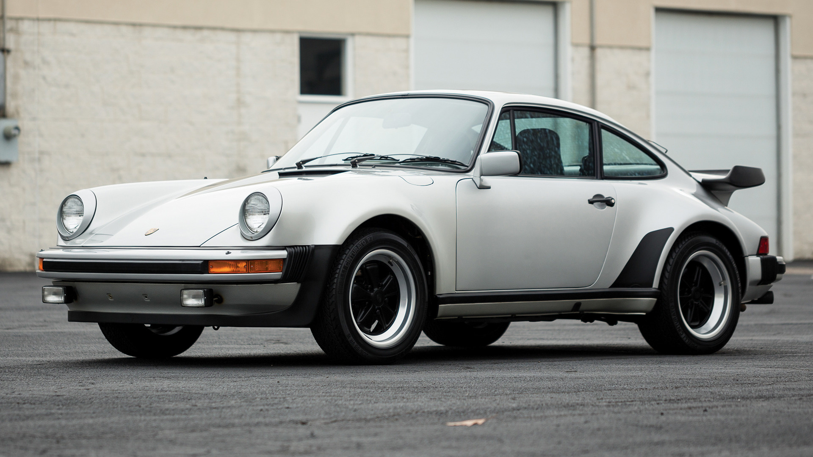

Apesar da crise energética dos anos 70 e muitos achando que não seriam fabricados supercarros relevantes, a Porsche criou o 911 Turbo (ou 930), uma verdadeira cadeira elétrica sobre rodas, capaz de desafiar até o mais habilidoso dos pilotos. Com um motor 3.3 e um turbo, o 930 era capaz de alcançar 275 km/h e, na época, foi considerado como o carro de rua mais rápido e arisco do mundo. Com um visual alargado e um enorme aerofólio na traseira, a 930 era inconfundível, tanto estéticamente quanto na dificuldade de guiar. Seu apelido de "criadora de viúvas" não é um exagero, visto que a falta de controles de estabilidade no carro facilitava a perda de controle e uma potencial fatalidade e, portanto, é um carro que exige muita habilidade do piloto. Apesar do grande número de acidentes, o 911 Turbo sempre terá um lugar especial no coração dos amantes de carros.